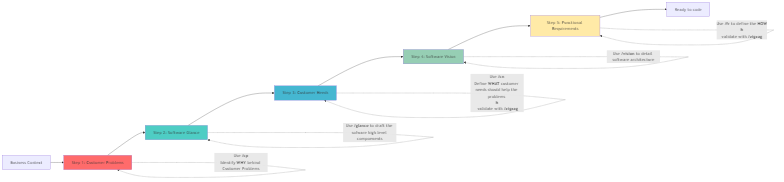
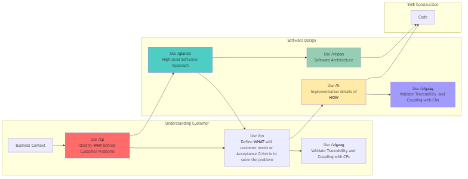
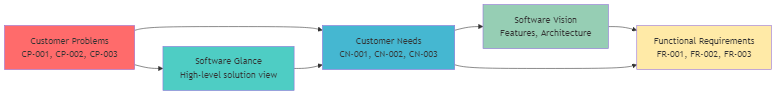
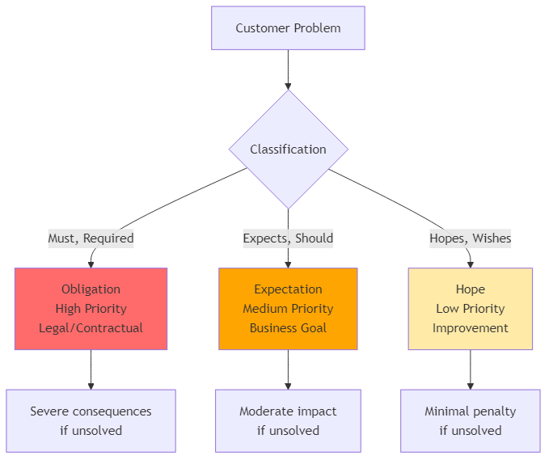

Stop building the wrong thing. AI-guided requirements engineering that starts with real customer problems, helping engineers discover what to build, reflect on business impact, and maximize the value of their work.
An Agent Skill for AI-guided software requirements engineering. Works with GitHub Copilot, Claude Code, and other AI agents.
Have you ever spent weeks building a feature, only to discover it didn't solve the actual problem? You're not alone. The #1 cause of software project failures is building what stakeholders asked for instead of what they actually need.
Your AI coding assistant guides you through a proven 5-step process. You start with real business problems and end with traceable, justified requirements — so every feature you build solves an actual need.
Spend 30 minutes upfront with your AI agent to save weeks of building the wrong thing.
Identify what customers actually need before writing code
Every line of code traces back to a problem it solves
Catch misunderstandings in minutes, not after weeks
Know exactly why each feature matters and to whom
Works with GitHub Copilot, Claude, and other AI agents
Know what's critical vs nice-to-have based on problem severity
A systematic process that ensures you discover problems first, then design solutions. Each step builds on the previous to maximize your impact:

Identify the WHY - understand business pain and classify by problem class (Obligation / Expectation / Hope — roughly must-have / should-have / could-have)
✅ You get: Clear focus on what matters most, justification for every feature
/customer-problemsSketch high-level solution approach - components, interfaces, boundaries
✅ You get: Shared understanding with team, architectural direction
/software-glanceDefine the WHAT - outcomes the system must deliver to solve the problems
✅ You get: Success criteria, measurable goals, scope boundaries
/customer-needs /zigzag-validator (validate)Detail architecture, features, constraints, and technical approach
✅ You get: Technical roadmap, stakeholder alignment, design decisions
/software-visionDefine the HOW - detailed, testable requirements for implementation
✅ You get: Implementation checklist, acceptance criteria, full traceability
/functional-requirements /zigzag-validator (validate)
Every requirement traces back to ensure it solves real problems. Each artifact is interconnected:

Customer Problems are classified by severity to prioritize what must be solved:

Ask your AI assistant to install it:
Install the Problem-Based SRS skill from RafaelGorski/Problem-Based-SRSMany AI agents (including GitHub Copilot and Claude Code) can install AgentSkills when you ask them, but the exact installation steps vary by agent.
If your agent does not install it automatically, follow the Installation Options in the README to copy the skill manually or use the AgentSkills CLI.
Use these commands in VS Code, Visual Studio, JetBrains IDEs, or Claude:
/problem-based-srs # Full methodology - start here for new projects
/business-context # Business Context - establish project principles
/customer-problems # Customer Problems - identify business pain
/software-glance # Software Glance - sketch solution approach
/customer-needs # Customer Needs - define required outcomes
/software-vision # Software Vision - detail architecture
/functional-requirements # Functional Requirements - specify implementation
/zigzag-validator # Validate traceability - quality check
/complexity-analysis # Optional: Axiomatic Design analysisWorks with any AI agent that supports the AgentSkills standard:
skills/problem-based-srs/ (including the references folder)Simply describe your business context or problem:
I need to create requirements for [feature name]
Business Context: [describe current situation and problem]
Example:
"I need requirements for an inventory management system.
Our warehouse tracks everything in spreadsheets and loses
$50k/month due to errors."The AI will automatically:
Use: /problem-based-srs
Start from scratch and go through all 5 steps with your AI guiding you.
Use: /functional-requirements then /zigzag-validator
Validate that requirements trace back to real problems.
Use: /customer-problems
Dig deeper to uncover the actual problem they're trying to solve.
Use: /zigzag-validator
Verify all requirements trace to customer needs and problems.
How engineers use Problem-Based SRS in different situations:
Situation: Product manager asks for "a dashboard with analytics"
Your approach: Use /customer-problems to discover the real problem - turns out they need "real-time alerts when KPIs drop below threshold"
Result: Build the right thing (alerting) not the requested thing (dashboard)
Situation: You inherited vague requirements from another team
Your approach: Use /zigzag-validator to validate traceability, identify gaps, then use /customer-problems to fill missing problems
Result: Clear, traceable requirements that justify every feature
Situation: Stakeholders propose technical solutions ("Use Redis cache!")
Your approach: Use /customer-problems with discovery mode to ask "What problem does this solve?"
Result: Uncover actual need (faster queries) and evaluate best solution
Situation: Everything is "high priority" from stakeholders
Your approach: Use problem classification (Obligation/Expectation/Hope) to rank by severity
Result: Data-driven prioritization based on business impact
Situation: Converting user stories to technical tasks
Your approach: Use /customer-needs for acceptance criteria, /functional-requirements for implementation tasks
Result: Clear sprint goals with traceable work items
Situation: Reviewing a PR and wondering "why this approach?"
Your approach: Check FR traceability to see which problem it solves
Result: Context-aware review focused on solving the actual problem
/customer-problems to capture user stories as customer problems/customer-needs to define acceptance criteria/functional-requirements to break down into technical requirements/software-glance for high-level approach/software-vision for architectural decisions/zigzag-validator to ensure design addresses all needsThis repository provides agents and skills in the AgentSkills format:
agents/problem-based-srs/ - Orchestrator agent for full methodology
For GitHub Copilot, Claude Code, Claude.ai, and other AI agents:
skills/problem-based-srs/ - Main orchestrator skill
references/crm-example.md - Complete CRM walkthroughreferences/microer-example.md - Energy system walkthroughskills/customer-problems/ - Step 1: CP generationskills/software-glance/ - Step 2: Software Glance designskills/customer-needs/ - Step 3: CN specificationskills/software-vision/ - Step 4: Software Vision designskills/functional-requirements/ - Step 5: FR/NFR generationskills/zigzag-validator/ - Traceability validationskills/complexity-analysis/ - Optional: Axiomatic Design analysisdocs/ - Full methodology and research paperREADME.md - Quick start guide and examplesCONTRIBUTING.md - Contribution guidelinesStart building the right thing with AI-guided requirements.
View on GitHub View Skills Release 1.1We're excited to announce version 1.1 with Complexity Analysis and enhanced methodology features!
/complexity-analysis): Optional Axiomatic Design-based quality analysis for critical systems
crm-example.md - CRM system from business context to requirementsmicroer-example.md - Renewable energy system (technical domain)View the full changelog for details.